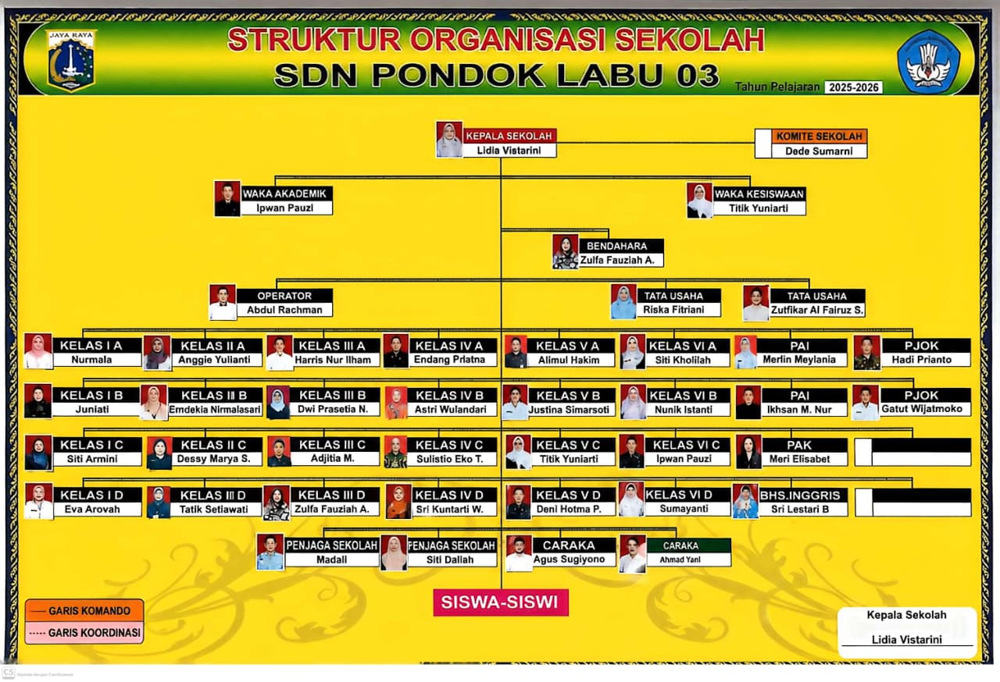
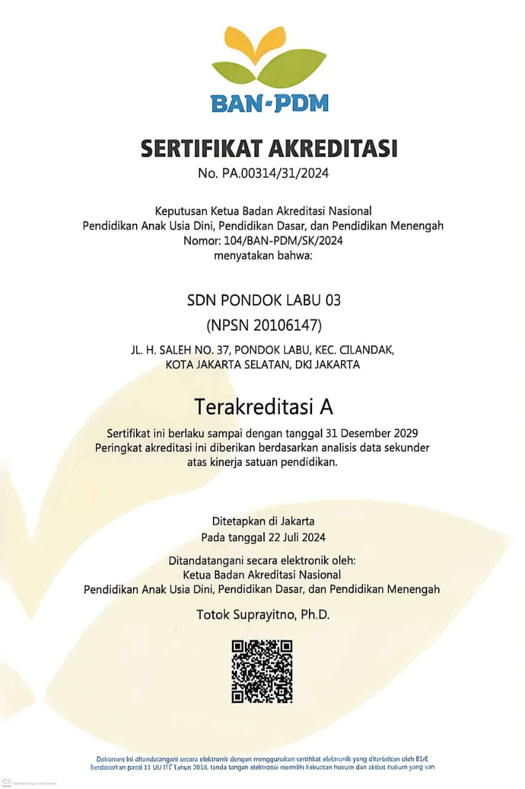
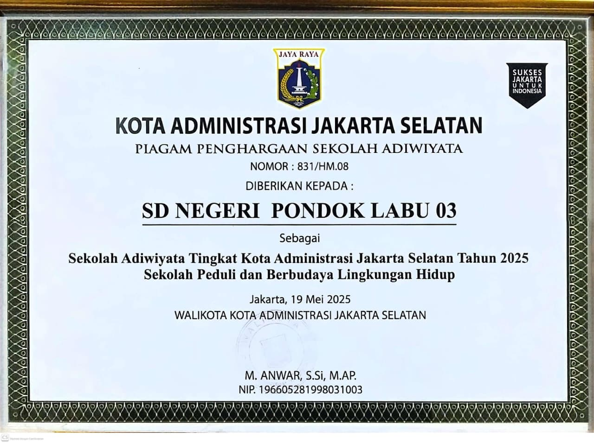

SD Negeri Pondok Labu 03
SDN Pondok Labu 03 adalah sebuah Sekolah Dasar Negeri di Jakarta, Indonesia. Sekolah ini terdiri berdasarkan SK Pendidikan Sekolah Nomor 192 Tahun 1982. Sekolah ini mendapat akreditasi A pada tahun 2019 berdasarkan surat keputusan nomor 752/BAN-SM/SK/2019 tanggal 9 September 2019.
Kegiatan Belajar Mengajar (KBM) yang diterapkan pada SDN Pondok Labu 03 adalah sehari penuh dengan lima hari per minggu. Sebagai bentuk realisasi rencana pemerintah Provinsi DKI Jakarta dalam menggabungkan sekolah pagi dan petang, maka SD Negeri Pondok Labu 09 Pagi dan SD Negeri Pondok Labu 04 Pagi digabung dengan SD Negeri Pondok Labu 03 setelah sebelumnya SD Negeri Pondok Labu 010 Pagi digabungkan dengan SD Negeri Pondok Labu 09 Pagi.
Sejarah
- 31 Desember 2014 Penilaian akreditasi terhadap SD Negeri Pondok Labu 03 dengan memperoleh nilai A.
- 2015 SD Negeri Pondok Labu 04 Pagi digabungkan ke SD Negeri Pondok Labu 03.
- 2017 SD Negeri Pondok Labu 09 Pagi digabungkan ke SD Negeri Pondok Labu 03.
- 2019 Pembangunan masjid baru di wilayah SD Negeri Pondok Labu 03.
- 9 September 2019 Penilaian akreditasi terhadap SD Negeri Pondok Labu 03 berdasarkan surat keputusan nomor 752/BAN-SM/SK/2019 dengan memperoleh nilai A.
- 12 September – 3 Oktober 2019 SD Negeri Pondok Labu 03 menjalani rehabilitasi sekolah.
Dokumen Sekolah

Struktur Organisasi
Periode 2019-2021

Sertifikat Akreditasi A
SK Nomor 752/BAN-SM/SK/2019

Piagam Penghargaan
Sekolah Adiwiyata Tingkat Kota
Klik pada gambar untuk melihat galeri